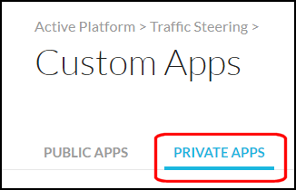
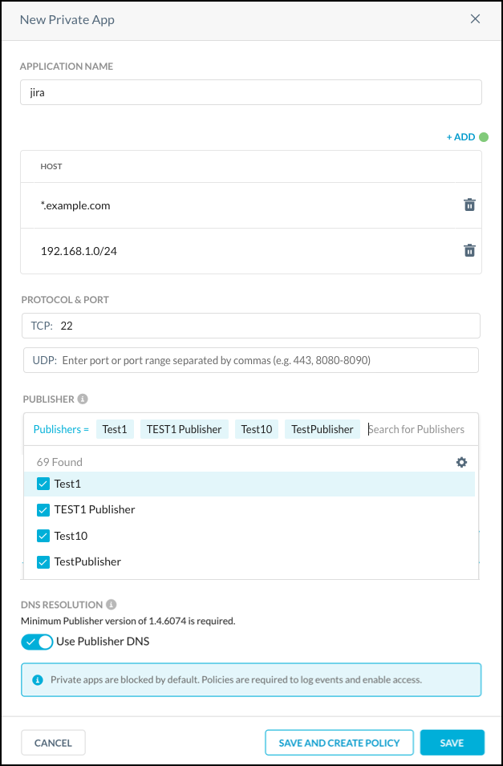

Create a Private App
Specify a private app for the Publisher to steer.
Go to Settings > Security Cloud Platform > App Definition.
Click Private Apps.
 Click New Private App.
 Enter a meaningful app name in the Application Name field (like
jira).Enter the Host domain, IP address, or CIDR in the Host field (like
jira.site.io). The Host field supports the following syntax: Host (jira.site.io), Wildcard (*.site.io), IP (10.1.2.3), and CIDR (10.1.2.0/24). Up to 32 hosts can be added.Important
Using a hostname is recommended. If an app needs to be accessible by hostname and IP address, enter each separately using the Add button.
Enter the app TCP or UDP port, port range, or ports and port ranges. For example:
Enter a specific port:
22Enter a specific port range:
1024-2048Enter ports and port range(s):
22,80,443,1024-2048
Click in the Publisher text field and select one or more Publishers from the dropdown list.
Tip
For high-availability, add multiple publishers for each private app. Up to 16 Publishers can be used per app.
To use DNS, enable the Use Publisher DNS toggle.
Click Save.
Connecting the private app to the publisher may take several minutes. Make sure that you see the green icon  for this private app before proceeding. If the badge is red, use the Troubleshooter feature or check your firewall rules before proceeding.
for this private app before proceeding. If the badge is red, use the Troubleshooter feature or check your firewall rules before proceeding.
Troubleshoot a Private App
To troubleshoot a private app:
Click Troubleshoot on the Private Apps page.

Select an option for these settings:
Private App: Select an app from the dropdown list.
User and Device: Search for and select a user and device, or select one or more from the list.

Click Troubleshoot. If the configuration is not correct, the troubleshooter will show what is not configured properly.

When the configuration is correct, the Troubleshooter will show all is working.

For more information about using the Troubleshooter, refer to Troubleshooting Netskope Private Access.